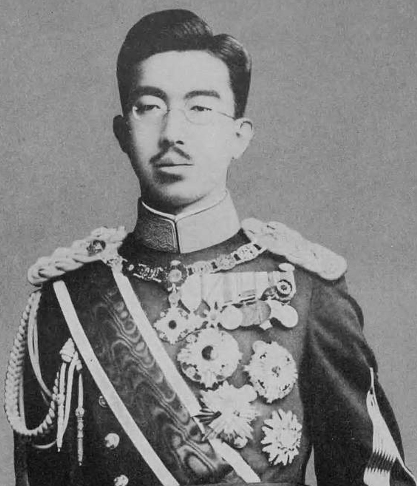

Nom : Hirohito (Empereur Shōwa)
Dates : 29 avril 1901 – 7 janvier 1989
Nationalité : Japonaise
Rôle : Empereur du Japon (1926–1989)
Hirohito, connu sous son nom posthume d’Empereur Shōwa, est l’une des figures les plus marquantes du Japon moderne. Souverain durant la montée du militarisme, la Seconde Guerre mondiale et la reconstruction d’après-guerre, il incarne une période de transformations profondes, marquée par l’expansion impériale, la défaite et la transition vers un Japon démocratique.
Sous son règne, le Japon mène une politique expansionniste en Asie, envahit la Chine et affronte les puissances occidentales dans le Pacifique. L’attaque de Pearl Harbor en décembre 1941 marque l’entrée du Japon dans une guerre totale contre les États-Unis et leurs alliés.
Après les bombardements atomiques d’Hiroshima et Nagasaki, Hirohito intervient personnellement pour imposer la reddition du Japon. Son discours radiodiffusé du 15 août 1945, première fois où les Japonais entendent la voix de leur empereur, met fin au conflit.
Hirohito reste une figure complexe : souverain d’un empire en guerre, puis symbole d’un Japon pacifié et reconstruit. Son règne couvre des décennies de bouleversements, de la militarisation à la modernisation, faisant de lui un acteur central de l’histoire du XXᵉ siècle.